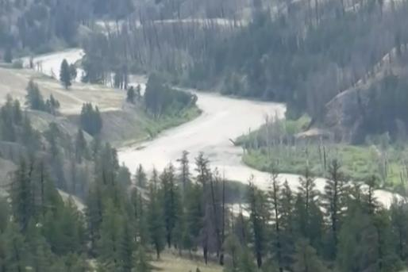
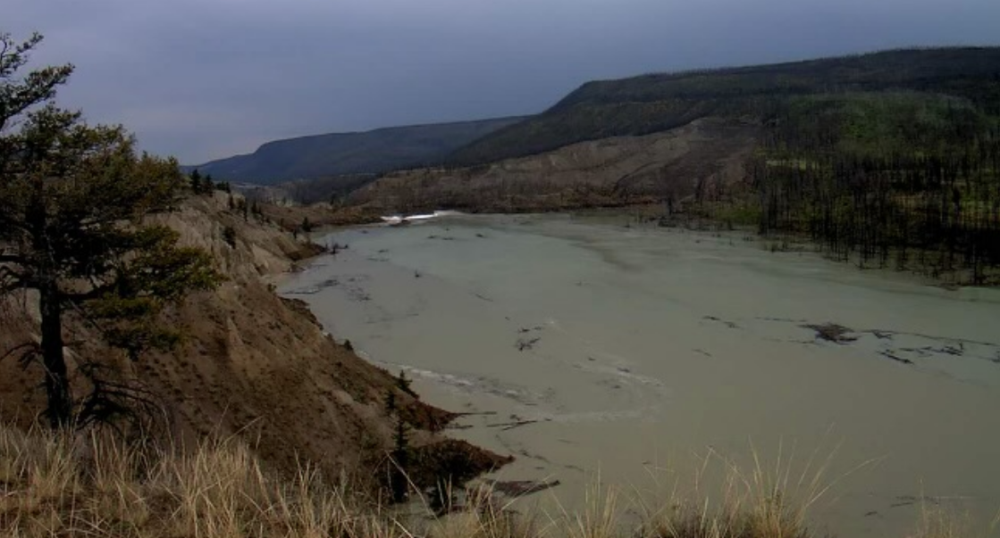

卑诗省官员表示，由于大量土石流倾泄而下，导致奇尔科廷河(Chilcotin River)堵塞数天，因此造成更多山体滑坡以及河岸被侵蚀的风险。
最新的省级更新报告称，从菲沙河交汇处到大规模山体滑坡现场，奇尔科廷河沿线观察到“严重不稳定的河岸坍塌”。
Tsilqot’in原住民政府分享的影片显示，一间小木屋、整棵树和大块河岸都被湍急的河水冲走。
卑诗省府最新消息称，官员尚未确认周一越过堵塞物的水流是否已经达到峰值，并且当水流穿过不稳定的沉积物时，可能会出现另一次激流。
据称，奇尔科廷河和菲沙河中有大量木材碎片在移动。

该省水管理部门的查普曼(Connie Chapman)表示，周一早上大坝溃决后，水流将流向菲沙河，模型显示，今天(6日)的某个时刻，水流将到达贺普(Hope)。
查普曼说，一些地方的河水水位将上升至相当于春季径流的水平，流经菲沙峡谷(Fraser Canyon)到达贺普，河水水位将升高约一米。
她说，一旦水进入菲沙河，它将有更大的扩散空间，官员将监测水中的碎片最终会在哪里终结。
水源、土地及资源管理厅长柯立伦(Nathan Cullen，下图)表示，来自该省、原住民和加拿大渔业部的专家“不懈地努力”应对，周一之后，山体滑坡进入了“新阶段”。
柯立伦表示，他们正在为“所有的可能性”做好准备，尽管溃决后风险正在降低，但由于斜坡不稳定而导致更多山体滑坡的可能性仍然是“真正令人担忧的”。
省府发布的紧急疏散通告指，从汉斯维尔(Hanceville)到菲沙河，一直到威廉斯湖(Williams Lake)以南的Gang Ranch Road桥梁沿岸所有居民，必须立刻撤离，并指洪水及土石流对居民的生命构成威胁。
Water and debris from the Chilcotin River landslide has now reached the Fraser River.
This video from early this afternoon shows why we remain on alert and people must keep off the river. #bcpoli @BowinnMa pic.twitter.com/AsTYAT9zJJ
— Nathan Cullen (@nathancullen) August 5, 2024
(图：柯立伦/X平台/视频截图)
V11